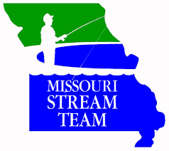
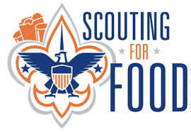

I have participated in the Operation Clean Stream for at least 4 years and I'vve found that I seem to enjoy it. Basically what it is is we go out and find a stream, most likely somewhere urban, and just spend a couple hours cleaning it up.

I have also participated in Scouting for food, but I satarted around 2009. This program was set up in 1985 to try to get more people to donate to shelters. In essence it's just a really big food drive but run by the BSA.